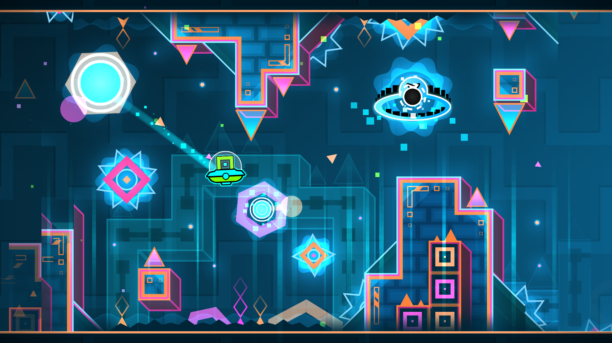

Geometry Dash

Genre: Rhythm • Platformer • Indie
Review
I genuinely believe that Geometry Dash stands as one of the best games out there in terms of rhythm-based experiences. At it's core, it just seems like a simple one-button sidescroller mobile game that you could play on your phone for a couple hours. While that is the case for many people who just played the base game, don't let its simple style fool you. This game has one of the most incredible communities out there, completely redefining what a level editor inside a game can do. There are levels being created that shock even talented game developers.
Final Verdict: A "simple" rhythm-based sidescroller that is ran by an incredible community.